Taktická online tanková střílečka.
↓ Ve hře World of Tanks je 11 velmocí, od kterých si hráč může koupit tanky. ↓
Německá vozidla, která mají vysoce přesná děla se skvělým probíjením pancíře, se nejlépe hodí k boji z dálky a držení nepřítele na uzdě. Spolu s pevným pancířem a vyšším množstvím bodů výdrže tyto německé stroje tíhnou k defenzivnějšímu přístupu. Jejich velké rozměry a nízká pohyblivost omezují jejich schopnost rychlého pohybu na bojišti.
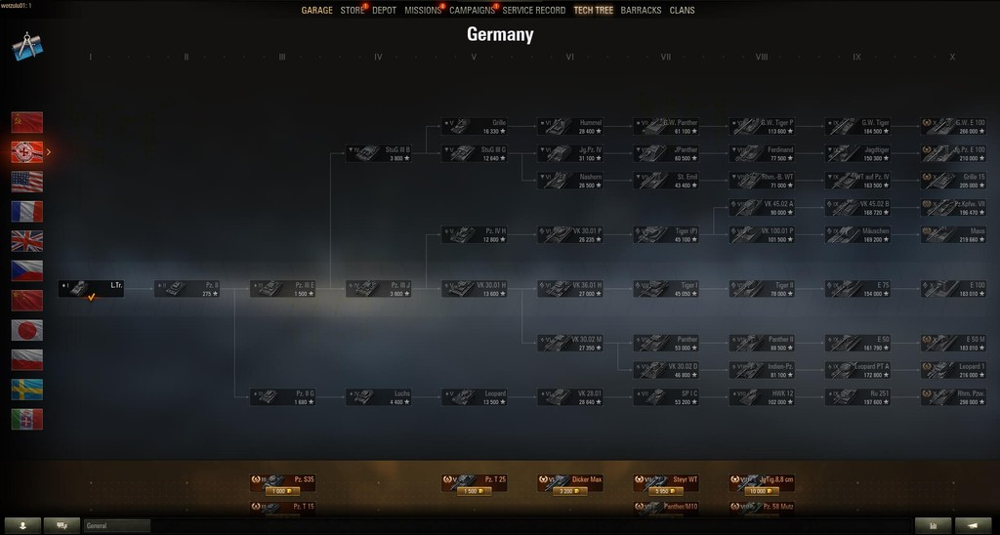Sovětská tanková flotila obsahuje řadu slavných historických strojů, které se zapojily do druhé světové války. Ovládnutí a postup po žebříčku sovětských tanků je poměrně snadný, neboť celý výzkum má několik společných rysů: slušný celkový pancíř, nízká silueta, výkonná děla a dobrá maximální rychlost. To vše dělá ze sovětských vozidel dobrou volbu pro ty, kteří dávají přednost boji zblízka či na střední vzdálenost a agresivnímu stylu hry.
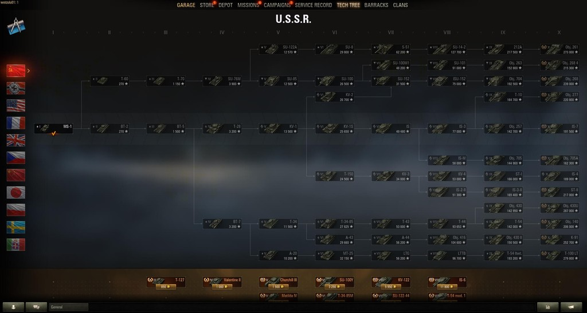Americká vozidla se chlubí výborným dohledem, skvělými úhly sklápění děla (to je užitečné zejména při boji v hornatém terénu) a silným čelním pancířem. Stroje strýčka Sama jsou dokonalé pro ty, kteří rádi využívají různé taktiky a mohou se adaptovat na měnící se bojové scénáře - ať už je to útok, obrana, chystání léček či konfrontace nepřátel zblízka.
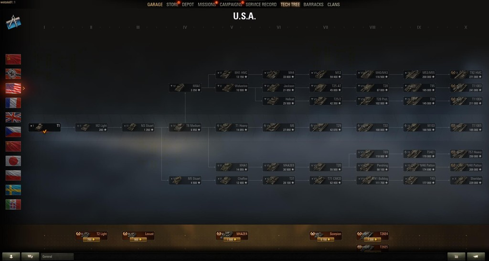V závislosti na úrovni mají francouzské tanky docela odlišné rysy a vlastnosti. První vozidla z období před druhou světovou válkou jsou pomalá, ale těžce obrněná. Naopak stroje z období po druhé světové válce jsou rychlé, ale špatně chráněné. To vše však bledne ve srovnání s hlavním rysem Francouzů - automatickým nabíjením: mechanikou, která umožňuje rychle vypálit několik granátů po sobě a udělit maximálního poškození. Hlavně si najděte úkryt, neboť nabíjení zásobníku zabere mnohem více času.
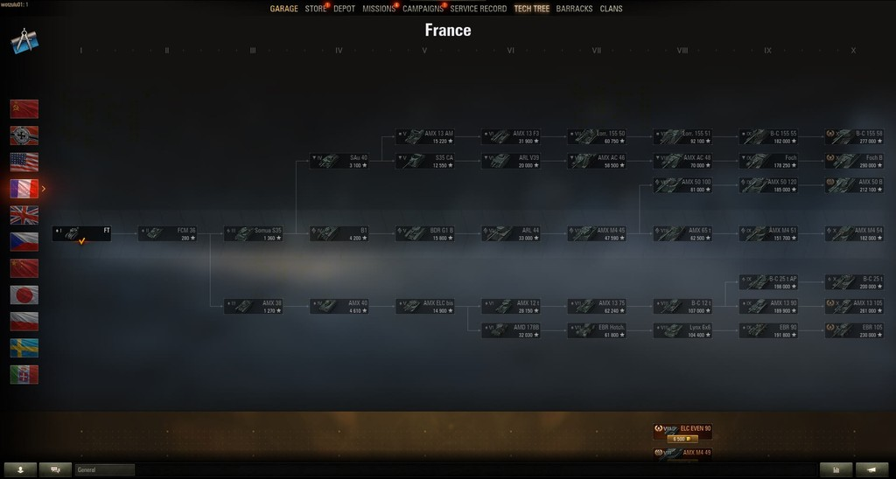Britská tanková flotila má jak klasické „lehké“ křižníkové tanky s vysokou pohyblivostí, ale slabou ochranou, tak i velké a těžkopádné stroje se silným čelním pancířem. Hlavním rysem celé frakce jsou však mimořádná děla s výbornými úhly sklápění, skvělou přesností, rychlostí palby a probíjením pancíře, které vyvažuje nižší poškození na výstřel. Celkově vzato jejich herní styl připomíná německá a americká vozidla – pomalu prorážejí nepřátelské linie nebo brání stávající pozici.
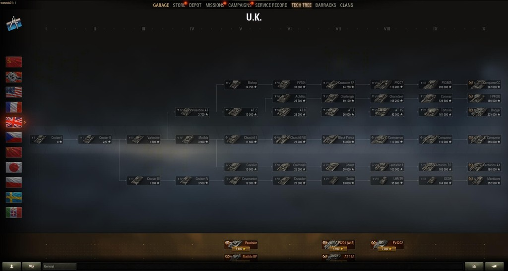Čínská tanková škola si spoustu věcí vypůjčila ze sovětských technických řešení a konstrukcí, díky čemuž jsou jejich vozidla koncepčně podobná vozidlům ze SSSR. Postup ve výzkumu vás dostane k řízení rychlých strojů, ideálních k prolamování nepřátelských linií, které se chlubí nízkými siluetami, zkoseným pancířem a silnými děly. Čínské tanky jsou určeny pro agresivní a útočný styl hry a jsou dokonalé pro hráče, kteří se na bojišti rádi chopí iniciativy.
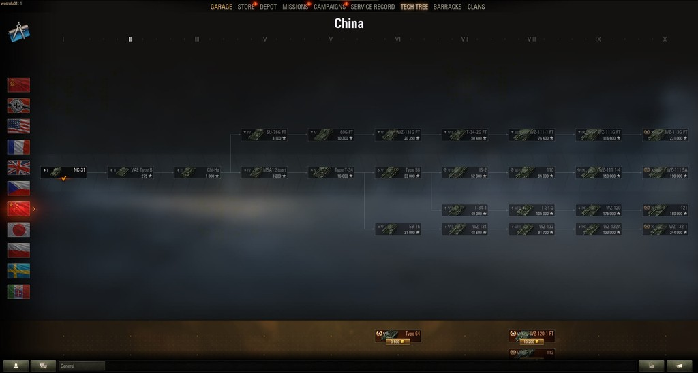Japonská tanková flotila je poměrně výrazná. To znamená, že rozdíl mezi těžkými a středními tanky je zde velmi nápadný. Zatímco první jmenované jsou supertěžké stroje s výkonnými děly a silným pancířem, tak druhé jmenované stroje jsou špatně chráněná a vysoce pohyblivá podpůrná vozidla. Těžká i střední vozidla však mají velmi dobré úhly sklápění děla, a střední tanky nejvyšších úrovní se navíc těší výhodě hydropneumatického podvozku, který jim dovoluje naklonit korbu.
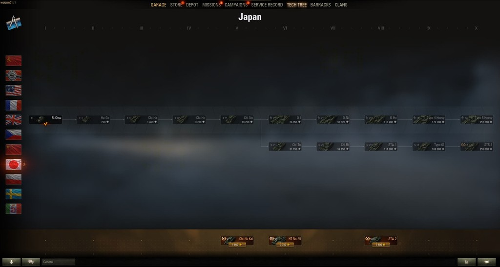Československé tanky byly ovlivněny řadou zahraničních konstrukcí z několika časových období. Jsou zde vozidla německého a sovětského původu, která stojí po boku domácích konceptů. Československé tanky mají vysokou palebnou sílu a mohou dosáhnout velké rychlosti, přičemž celá linie je završena dvěma stroji s automatickým nabíjením na IX. a X. úrovni. Celkově vzato budou tyto tanky nejvíce vyhovovat zkušeným hráčům, kteří vědí, jak využít jejich výhody a jak reagovat na různé bojové situace.
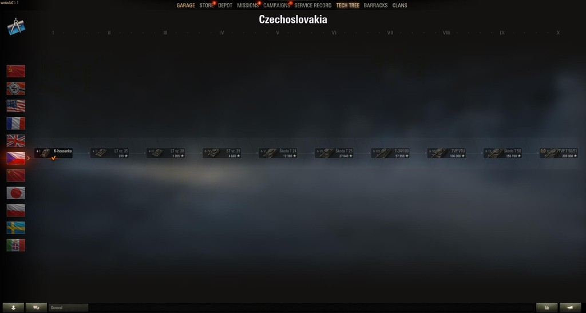Hlavní charakteristické rysy polských tanků začínají vystupovat na povrch uprostřed větve. Jedná se o robustní bojová vozidla s dobrým pancířem a rychlostí, která zdobí velmi výkonná děla. Polská vozidla v mnohém připomínají sovětské a čínské tanky, ale dokáží naservírovat ještě více poškození. Ačkoliv postrádají rychlost, stále mohou sebejistě prorážet nepřátelskou obranu a dominovat čelním liniím. Obecně vzato jsou polské tanky velmi vyvážené stroje se zjevným důrazem na palebnou sílu.
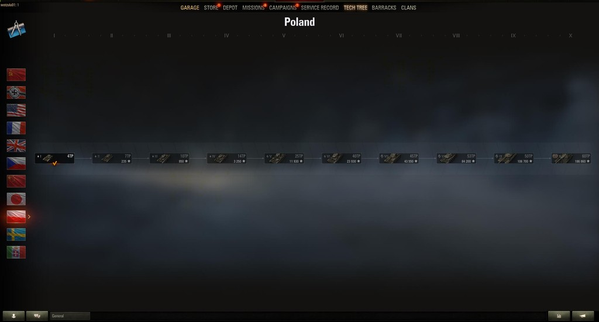Švédsku se podařilo vyvinout svou vlastní školu výroby tanků s několika jedinečnými koncepty. Zatímco tanky nižších úrovní se od svých vrstevníků příliš neliší, na horním konci se věci změní a přinesou dvě odlišné mechaniky: automatické nabíjení pro těžké tanky a hydropneumatický podvozek s funkcí naklánění korby pro střední tanky a stíhače tanků. Obecně jsou švédské tanky určeny k obraně a chlubí se dobrým, výrazně zkoseným čelním pancířem a skvělými úhly sklápění děla.
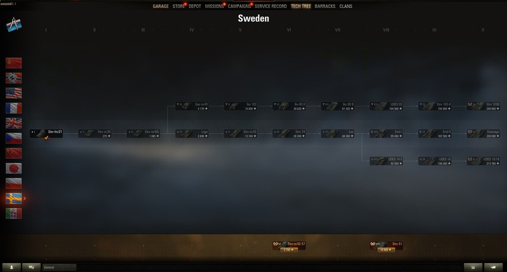Itálie převzala nápady z německých technických řešení. Proto je jednou z hlavních taktik těchto strojů lov z dlouhé vzdálenosti. Italové mají přesná a rychlopalná děla, a na vrcholu jsou tři tanky, které mají „automatické dobíjení“, což je pokročilá verze běžného automatického nabíjení. Vozidla, která jím jsou vybavena, mohou rychle vypálit několik granátů za sebou, ale netrpí dlouhou dobou nabíjení a mohou přejít na běžnou rychlost palby, čímž se v rukou tankových es stávají nebezpečnou zbraní.
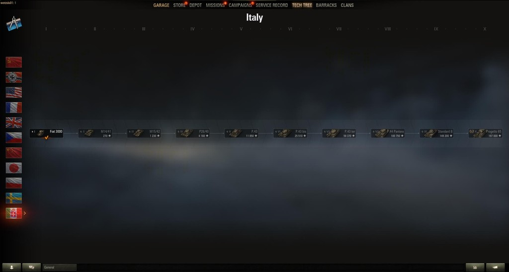